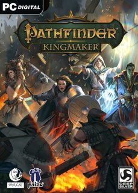

 |
|
| Tiempo de juego | No Jugado |
| Última actividad | Nunca |
| Añadido | 17/11/2025 13:24:15 |
| Modificado | 18/11/2025 5:46:03 |
| Estado de finalización | Not Played |
| Librería | Playnite |
| Fuente | 2TB DATOS |
| Plataforma | Macintosh Microsoft Xbox One PC (Linux) PC (Windows) Sony PlayStation 4 |
| Fecha de lanzamiento | 25/09/2018 |
| Puntuación de la Comunidad | |
| Puntuación de la Crítica | 74 |
| Puntuación de usuario | |
| Género | Role-playing |
| Desarrollador | Owlcat Games |
| Editor | Deep Silver / Knights Peak Interactive |
| Característica | Single-player |
| Enlaces | Wikipedia Pathfinder: Kingmaker - the first CRPG in Pathfinder universe (official site under Knights Peak Interactive) |
| Tag | [Game Engine] Unity [People] artist: Victor Surkov [People] composer: Dmitry V. Silantyev [People] composer: Inon Zur [People] director: Alexander Mishulin [People] programmer: Alexey Drobyshevsky |
Pathfinder: Kingmaker is an isometric role-playing game developed by Russian studio Owlcat Games and published by Deep Silver, based on Paizo Publishing's Pathfinder franchise. Announced through a Kickstarter campaign in 2017, the game was released for Microsoft Windows, macOS, and Linux on 25 September 2018. As of May 2024, the publisher became Knights Peak, a subsidiary of My.Games.
The gameplay is modeled on the Pathfinder role-playing game and inspired by classic computer RPGs such as Baldur's Gate and Neverwinter Nights. It features a real-time-with-pause or turn-based combat system and an isometric perspective. One of the game's distinguishing features is its emphasis on realm-building, with the player's decisions as a local lord affecting the rest of the gameplay as they are embroiled in a world of political intrigue and adventure.
Character customization is a key feature, along with an alignment system where a character's alignment can change due to player choice. While the player begins with only one character of their creation, the game is party-based as companions join them along the way. These include both established Pathfinder characters and newly invented characters. The game lasts around 80 hours.
Pathfinder: Kingmaker is based on the six modules that make up the Pathfinder Adventure Path campaign published in 2010.
The Stolen Lands are a harsh, anarchic stretch of territory. Attempts to rule over it have repeatedly failed. After the player-character kills a local bandit leader, they are made a baron/baroness in the Stolen Lands by Jamandi Aldori, a noble in the nearby kingdom of Brevoy. The Baron/ess must deal with multiple threats to the kingdom including unusual trolls, an epidemic of people turning into beasts, and an ancient lich. They recruit various companions to their party, and expand their barony's territory and influence.
Aldori starts an independence war for her region of Brevoy. The Baron/ess may choose to help Aldori, side with the ruling Brevic government, negotiate a peaceful solution, or stay uninvolved. After resolving this issue, the Baron/ess rises to become an independent king/queen (hereafter referred to as the Monarch). The newly-crowned Monarch deals with more issues, primarily the meddling of neighboring king Irovetti of Pitax. The Monarch defeats Irovetti and annexes Pitax, becoming the only ruler in the Stolen Lands.
The Monarch discovers that all of the threats were orchestrated by a nymph named Nyrissa. Nyrissa once attempted to become an Eldest, the immortal rulers of the fey realm called "the First World". This failed and angered the Lantern King, who is one of the Eldest. The Lantern King removed a portion of Nyrissa's soul and commanded her to destroy 100 kingdoms as an apology. Pitax (which Nyrissa secretly sabotaged) was kingdom number 99.
Nyrissa sends endless fey armies to attack the Monarch's kingdom. The Monarch travels to the far west, where they find a portal to Nyrissa's home in the First World. They locate and attack Nyrissa. After defeating her, the magical apology is complete, since Nyrissa's "kingdom" has been ended. The player may choose to let Nyrissa take the apology to the Lantern King, kill her, or convince her to join the Monarch in fighting the Lantern King.
If Nyrissa is allowed to finish the apology, the kingdom is no longer troubled by the fey and the game ends. Otherwise, the Lantern King appears and reveals that he was helping the Monarch in various guises throughout the story. Angered that his "game" has been spoiled, the Lantern King sends the spirits of Nyrissa's victims to attack the kingdom. The Monarch launches an assault to retake their capital city with various allies. They weaken the Lantern King by destroying artifacts that he created, then battle him in the royal palace.
The Lantern King is killed, but instantly returns to life since he is an Eldest. Impressed, the Lantern King offers the Monarch a deal. They may become the Lantern King's herald, gaining immortality and restoring the kingdom to normal. Alternatively, they may simply say that they & the Lantern King should leave each other alone, to which the Eldest agrees but laments the end of his "performance".
There is a secret ending that depends on specific actions throughout the game, including researching curses extensively and persuading Nyrissa to ally with the Monarch against the Lantern King. After defeating the Lantern King, Nyrissa & the Monarch use a mask imbued with a fragment of his power to bounce his own curses back at him, permanently killing him. The kingdom lives in peace and prosperity, straddling the mortal & First worlds.
At the same time that she sponsored the main campaign Baron/ess, Jamandi Aldori also appointed another new baron: Mercenary leader Maeger Varn for the barony of Varnhold in the eastern Stolen Lands. The DLC player-character is the General, one of Varn's closest advisors. Accompanied by Varn, the wizard Cephal Lorentus, and several other mercenaries, they must deal with various problems in the barony. These include centaur attacks, missing travellers, and a political agitator from the south. The centaurs warn the General that an ancient evil slumbers under the land and must not be disturbed.
The General reaches a village which is in civil war between a death cult and worshippers of other gods. After resolving the conflict, the cultists' leader informs them of a great "master" who has awoken. The master's tomb is the same evil which the centaurs have sworn to guard against. The party travels to the tomb and opens it. It is filled with countless illusions, and is actually a fortress sunk into the ground. Varn and Lorentus are separated from the rest of the group by traps and illusions.
The remaining group finds a portal to the First World deep in the fortress. The Horned Hunter (who is really the Lantern King, although the General does not learn this) appears and explains the situation: the ancient evil does exist but in a different location, and the events of the DLC were all a long joke by the Hunter. The Hunter offers a "gift" to the General, which varies depending on the player's choices throughout the game: The General either ends up turned into a mimic to eat other adventurers, forced to defend the tomb from an endless army of First World monsters, or roams the First World after being stranded. Regardless of the General's fate, the Horned Hunter kills the remaining mercenaries. Varn and Lorentus survive to take part in the events of the main story.
At some point in the main campaign, the Baron/Baroness/King/Queen has dreams pointing to a massive dungeon called the Tenebrous Depths. Upon reaching the area, the party encounters a dragon called Xelliren. The dragon explains that he sent the dreams, and that the bottom of the dungeon hosts a Spawn of Rovagug, an ancient creature that can lay waste to entire continents if allowed to escape.
As the party descends through the floors of the dungeon, they come across past adventurers who have been driven insane by the Spawn's influence. Once all four have been defeated, the party enters a portal that takes them to the Spawn's nest. Upon defeating the Spawn, the party returns to the surface where Xelliren congratulates them but note that the pattern will likely repeat in several thousand years. Nonetheless, Xelliren notes that the party doesn't have to worry about it.
Alternatively, the player can come across clues from the fallen adventurers written while they had not yet succumbed to the Spawn's influence, specifically blaming Xelliren for luring them to the dungeon. With enough clues, the Baron can make Xelliren understand the truth: the dragon had been unintentionally working for the Spawn. Shocked by the revelation, Xelliren disappears and reappears during the party's fight with the Spawn, attempting to attack it but ending up mind-controlled instead. After the party defeats the Spawn, Xelliren regains his sanity and congratulates the player for permanently defeating the Spawn.
Following the game's announcement, Owlcat announced they were considering different funding avenues. This culminated in the June 2017 launch of the Kickstarter campaign, which was billed as for expanding the game rather than funding it. The campaign ended by the end of the month after raising US$909,057 from more than 18,000 contributors. Chris Avellone, an acclaimed scriptwriter for other role-playing games, contributed to the game.
The game was published by Deep Silver and was released on 25 September 2018. On June 6, 2019, Enhanced Edition update was released for computer platforms. On August 18, 2020, ports for PlayStation 4 and Xbox One were released subtitled Definitive Edition. The computer versions got an update at the same time that was titled Enhanced Plus Edition.
Pathfinder: Kingmaker received mixed reviews, holding an aggregate score of 73 out of 100 on Metacritic. The Game Debate review praised the game's engrossing story, depth and realm management feature, calling it "a beautiful looking, rich CRPG, that delivers a great place to adventure, an interesting land to rule and the tools to carve out a realm that you can call home". In a somewhat less enthusiastic review, GameSpot's Daniel Starkey believes the game to be "hampered by a litany of small issues, balancing, and the gargantuan knowledge base you'll need to play most effectively", while also lauding the narrative and the kingdom management aspect of the game, mentioning that "for those with the patience, the rewards are well worth the investment". The game has also been criticized for its inconsistent difficulty curve and the opaqueness of some of its mechanics.
On the technical side, the game's launch was plagued by numerous bugs, long loading screens and balance issues, which hurt the game's initial reception with both professional critics and customers. In the following months, many of these issues have been fixed by patches.
In September 2021, the game had sold over one million copies worldwide.
Owlcat announced a sequel Pathfinder: Wrath of the Righteous in December 2019. Narratively, the game follows the same-named Adventure Path published in August 2013, where the player's party becomes involved in a battle between mortals and demons. The sequel builds on the engine from Kingmaker to address concerns raised by critics and players, and expands additional rulesets from the tabletop game, including new character classes and the mythic progression system. Owlcat launched a Kickstarter campaign in February 2020 to raise additional development funds for the title. The Kickstarter successfully raised over US$2 million of its requested US$300,000, allowing for several stretch goals to be added during development.